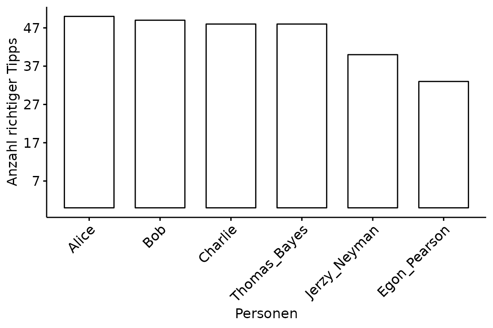
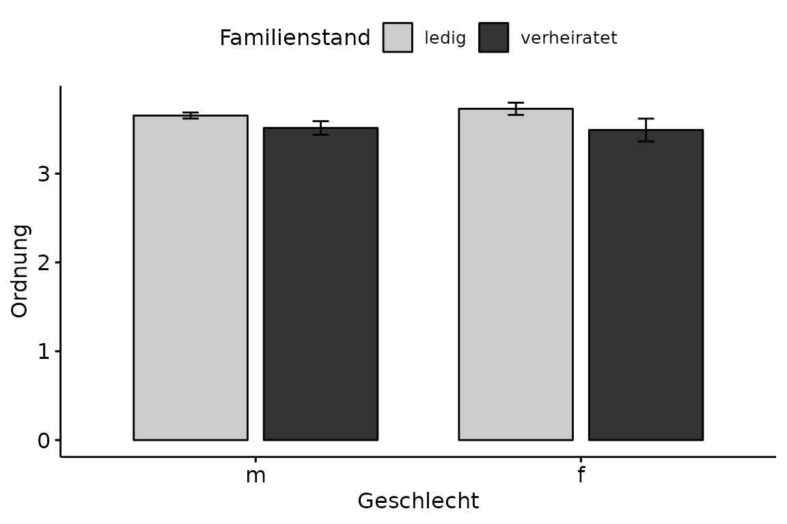
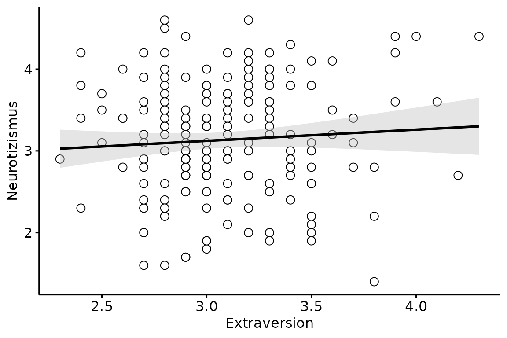

Visualisierungen
R für empirische Wissenschaften v1.0.2
Jan Philipp Nolte
Source:vignettes/04_Visualisierungen.Rmd
04_Visualisierungen.RmdEinführung
In diesem Kapitel werden wir uns das Package ggpubr
genauer anschauen (basiert vollständig auf ggplot2). Die
Funktionen aus dem Package sind darauf ausgelegt, schnell
publikationsreife Graphen zu erstellen. Dabei verwendet man immer den
selben Workflow. Zuerst bringt man die Daten ins Lange Format.
Anschließend erstellt man den Graphen mit der jeweiligen Funktion mit
einem vorangestellten gg. Das gg in
ggpubr und allen enthaltenen Funktionen wie
ggbarplot() steht für Grammar of Graphics. Den
gespeichterten Graphen passt man dann mit ggpar()
entsprechend an. Zum Schluss speichert man mit ggsave().
Schauen wir uns zuerst Säulendiagramme an.
Säulendiagramm
Dafür benutzen wir zunächst den im vorherigen Kapitel erstellten
Datensatz namens df mit den geordneten Gesamtpunktzahlen
der Personen bei der Tipp WM.
## # A tibble: 6 × 2
## Person Gesamt
## <chr> <dbl>
## 1 Alice 50
## 2 Bob 49
## 3 Charlie 48
## 4 Thomas_Bayes 48
## 5 Jerzy_Neyman 40
## 6 Egon_Pearson 33Einen Graphen zu erstellen, funktioniert intuitiv. Das erste Argument
data ist der Name des Datensatzes. Auf der x-Achse möchten
wir die verschiedenen Personen abgebildet haben und auf der y-Achse die
jeweilige Gesamtpunktzahl.
ggbarplot(data = df,
x = "Person",
y = "Gesamt")
Das sieht noch nicht sehr schön aus. Die Achsenbeschriftungen sind
unklar formuliert, die Namen überlappen sich und die Abstände zwischen
den angezeigten Punktezahlen auf der y-Achse sind nicht schön. Damit wir
solche Attribute verändern können, müssen wir den Graphen abspeichern.
Als Variablennamen benutzen wir willkürlich plot.
plot <- ggbarplot(data = df,
x = "Person",
y = "Gesamt")Diesen gespeicherten Graphen können wir nun, wie bereits erwähnt, der
Funktion ggpar() übergeben. Die Achsenbeschriftungen passen
wir mit xlab respektive ylab an, die Größe der
Schrift mit font.x und font.y, den Winkel der
Personennamen mit x.text.angle und die Abstände auf der
y-Achse mit yticks.by. Im Laufe dieses Kapitels werden wir
noch andere Argumente für ggpar() kennenlernen. Für eine
vollständige Liste, kannst Du einfach ?ggpar ausführen.
Gerade das Anpassen der Schriftgröße ist extrem wichtig beim Einfügen in
Paper oder Abschlussarbeiten, da die Schriftgröße innerhalb des Graphen
in der Regel nicht stark von der des Textes abweichen darf.
ggpar(p = plot,
xlab = "Personen",
ylab = "Anzahl richtiger Tipps",
font.x = 12,
font.y = 12,
x.text.angle = 45,
yticks.by = 10)
Das sieht jetzt schon schöner aus. Aber auch in der Funktion
ggparplot() selber, können wir einige Anpassungen
vornehmen. Wenn man die Reihenfolge verändern möchte, benutzt man
order und für das Verändern der Säulenbreite
width.
plot <- ggbarplot(data = df,
x = "Person",
y = "Gesamt",
order = c("Alice", "Charlie", "Bob",
"Thomas_Bayes", "Jerzy_Neyman", "Egon_Pearson"),
width = 0.9)
ggpar(p = plot,
xlab = "Personen",
ylab = "Anzahl richtiger Tipps",
font.x = 12,
font.y = 12,
x.text.angle = 45,
yticks.by = 10)
Häufig muss man gepaarte Säulendiagramme erstellen.
Abwechslungshalber schauen wir uns dafür den indonesischen Datensatz an
(siehe Übungsaufgabe). Genauer gesagt möchten wir uns anschauen, wie
Selbsteinschätzung von Ordnung zwischen den Geschlechtern innerhalb der
Familienstände variiert. Im Vergleich zu vorher kommt nun das
fill und add.params Argument hinzu. Beide sind
genau in der Form zwingend notwendig. Darüber hinaus fügen wir mit
add den Standardfehler hinzu, wählen mit
palette eine publikationsreife graue Farbpalette und
stellen den Abstand zwischen den gepaarten Säulen auf 0.8.
ggbarplot(data = indonesisch,
x = "Geschlecht",
y = "Ordnung",
fill = "Familienstand",
add.params = list(group = "Familienstand"),
add = "mean_se",
palette = "grey",
position = position_dodge(0.8))
Bis auf die Legende schon wunderschön. Zum Anpassen mit
ggpar() speichern wir den Graphen als paired
ab. Das Argument ylim() definiert die y-Achse von 0 bis 5,
legend die Position (erster Wert für Höhe auf x-Achse,
zweiter für y-Achse), legend.title für den Titel der
Legende und schließlich font.legend für die so wichtige
Schriftgröße.

Streudiagramm
Nun gehen wir weiter zum big_five Datensatz. Wir möchten
den Zusammenhang von Extraversion und Neurotizismus durch
ggscatter() mit einem Streudiagramm darstellen.
ggscatter(data = big_five,
x = "Extraversion",
y = "Neurotizismus")
Man kann auf einfache Art und Weise zusätzliche Informationen wie
eine Regressiongerade, das Konfidenzintervall oder einen
Korrelationskoeffezienten hinzufügen. Das Argument
cor.method für die Art der Korrelation,
conf.int für das Konfidenzintervall, add für
die Regressionsgerade, add.params zum Anpassen der
Regressionsgerade (auch hier müssen die Argumente genau in dieser Form
innerhalb von list() stehen), size für die
Größe der Punkte, shape für die Form und schließlich
color für die Farbe.
ggscatter(data = big_five,
x = "Extraversion",
y = "Neurotizismus",
cor.method = "pearson",
conf.int = TRUE,
add = "reg.line",
add.params = list(color = "black",
fill = "gray"),
size = 3,
shape = 21,
color = "black")## `geom_smooth()` using formula = 'y ~ x'
Das Anpassen mit ggpar() sparen wir uns an dieser
Stelle.
Boxplot
Auch Boxplots funktionieren nach dem selben Schema wie Säulen- und Streudiagramme.
ggboxplot(data = big_five,
x = "Geschlecht",
y = "Neurotizismus")
Zum Ausblenden der Ausreißer setzen wir outlier.shape
auf NA und zum Hinzufügen der Errobar setzen wir
bxp.errorbar auf TRUE.
ggboxplot(data = big_five,
x = "Geschlecht",
y = "Neurotizismus",
outlier.shape = NA,
bxp.errorbar = TRUE)Histogramm
Histogramme benötigen kein y Argument, da dort die
Häufigkeiten abgebildet sind. Das Argument bins ist
besonders wichtig, da die dargestellten Informationen über die
Häufigkeiten in Abhängigkeit der Anzahl der bins (Säulen) stark
variieren können.
gghistogram(data = big_five,
x = "Neurotizismus",
bins = 20)Liniendiagramm
Auch Liniendiagramme sind einfach und schnell nach den selben Prinzipien erstellt. Greifen wir hierfür wieder auf die Gesamtpunktzahlen der Tipper zu.
ggline(data = df,
x = "Person",
y = "Gesamt")ANOVA Plot
Eine Besonderheit stellt hierbei der ANOVA Plot dar, was
nichts anderes als ein einfacher Mittelwertsvergleich ist. Exemplarisch
sei dies an der unterschiedlichen Ausprägung von Selbsttranszendenz
zwischen den Geschlechtern innerhalb der Familienstände gezeigt. Das
Argument linetype ändert wenig überraschend die Art der
Linie. Entscheidend ist das Argument add, weil uns nur die
Mittelwerte interessieren. Das Argument size verändert
optional die Dicke der Linien.
ggline(data = indonesisch,
x = "Geschlecht",
y = "Selbsttranszendenz",
linetype = "Familienstand",
add = "mean",
size = 0.7)
Speichern
Mit ggsave() kann man den Graphen einfach im derzeitigen
Projektverzeichnis speichern. Wir erinnern uns, dass das
Projektverzeichnis immer dort ist, wo unsere Projektdatei liegt. Wenn
man sich nicht mehr sicher sein sollte, kann man dies mit
getwd() herausfinden. Das erste Argument ist der Dateiname
mit der gewünschten Dateiendung. Das zweite ist der zu speichernde
Graph. Die Argumente danach sind optional, allerdings möchte man häufig
die Breite und Höhe sowie die Auflösung (DPI) anpassen.
ggsave(filename = "plotName.jpeg",
plot = plotName,
width = 5,
height = 5,
dpi = 500)Mehrere Graphen auf einmal kann man mit einer Funktion aus dem
rBasics Package speichern. Dafür muss man eine Liste (siehe
Extras) aus den Graphen machen. Diese Liste übergibt man dann als erstes
Argument der Funktion ggsave_all(). Des weiteren können
Höhe, Breite und DPI Anzahl angepasst werden. Es werden automatisch
jpegs erstellt und die Namen setzen sich aus den Namen in der Liste
zusammen.
plots <- list(Name1 = a, Name2 = b)
ggsave_all(plots,
width = 5,
height = 5,
dpi = 500)